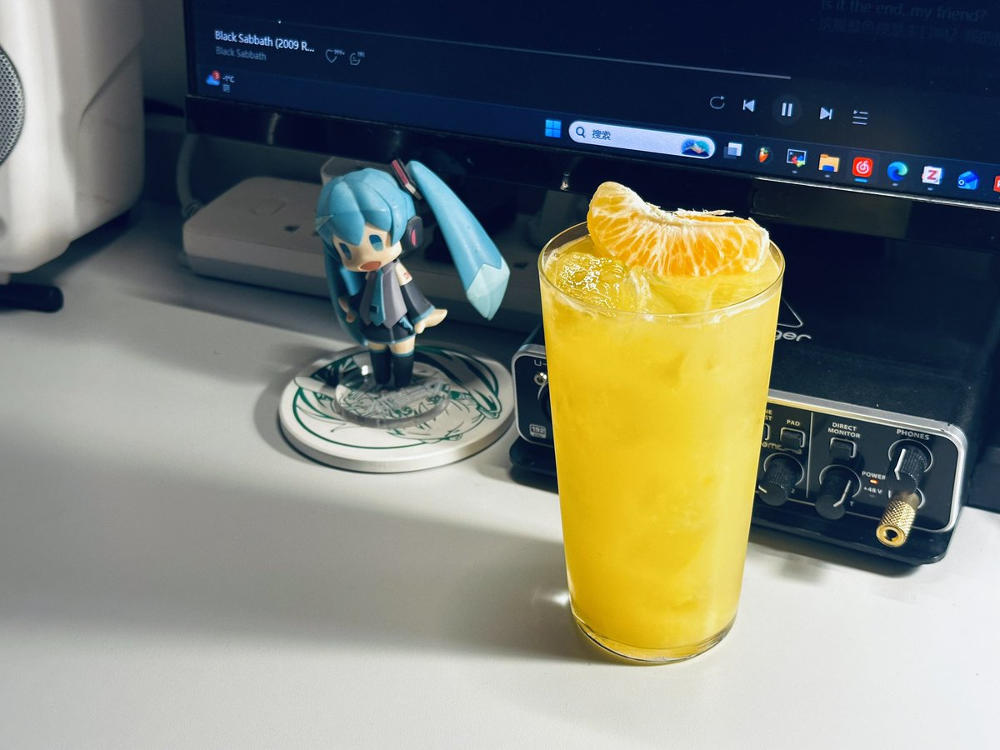

Stargazer 8964
@SHUGE0731
@Nirc251 你们知道吗 我是耙耙柑全肯定bot 冬日战力最强水果🍊

泥头车
@Nirc251
耙耙柑特调
耙耙柑 4 瓣
青柠汁 15ml
君度 15ml
金酒 30ml
橙汁 15ml
苹果醋 15ml
单糖浆 15ml
放入摇壶中捣碎滤出到碎冰的柯林杯中，取一瓣耙耙柑装饰
耙耙柑是一种特别善良的水果，好吃没有负担又清爽味道还很好闻。和洋流老大出去玩的时候总是会给我带一个耙耙柑，善良的水果和亚撒西的人 https://t.co/nU1YcPb0XK